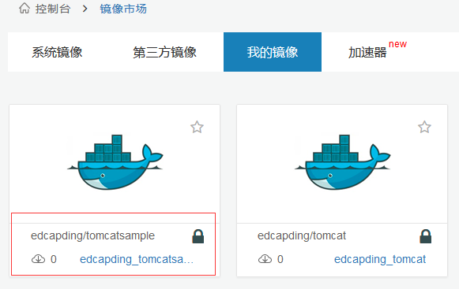
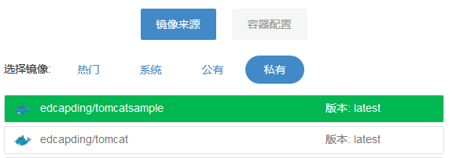

快速部署Java 应用
如果您需要快速部署一个Java的应用到TenxCloud的容器平台，可以使用如下步骤:
1.首先在你的Java项目目录中创建一个Dockerfile文件，如果您已经添加了此文件，可以忽略此步。
参考tomcatsample项目地址：https://github.com/tenxcloud/java-sample
# Dockerfile to create a docker image
# Base image
FROM tomcat:8.0
# Add war package to the image
ADD hello/. /root/hello
ADD run.sh /run.sh
RUN chmod +x /run.sh
# Expose the container port
EXPOSE 8080
CMD ["/run.sh"]
2.通过"tce login" 登录TenxCloud引擎
3.输入"tce push tomcatsample" 在TenxCloud上构建Docker 镜像，并push到TenxCloud的私有镜像服务器中：

4.登录 www.tenxcloud.com，在“镜像板块”的“我的镜像”中，可以看到刚刚构建的“tomcatsample”镜像。

5.切换到“容器 服务”，在私有镜像中就能看到自己的镜像，并创建相应的容器服务了： 
注意：如果镜像没有 expose 任何端口，将不能创建容器服务，我们也可以在“我的镜像”中选择镜像，并在“服务接口”中配置镜像的端口和环境变量等信息。
6.创建过程中可以点击实例，进入查看日志和事件，事件出现运行成功，那么已经创建实例成功。

7.等待实例运行状态变为‘运行中’后，点击‘服务地址’，可直接进入我们的tomcat项目。

8.接下来就可以看到我们的tomcat项目了。